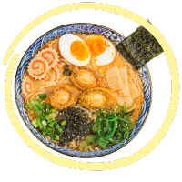
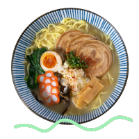

¿Estáis preparadas para un rico ramen?
No os podréis resistir, y es que, además de estar para “chuparse los dedos”,
es animal friendly.
Solo me queda deciros 利用する,
o si, como yo no tenéis ni idea de japonés,
¡que aproveche!
Un poco de inspiración...


Ingredientes
- 2 dientes de ajo
- 1 cebolla
- 5 cm de jengibre fresco
- 30 g. de setas shitake deshidratadas
- 6 tazas de agua
- 1 cucharada de tamari o salsa de soja
- 1 cucharada de miso
- 1 cucharada de bicarbonato (opcional)
- 200 g. de fideos
- 275 g. de tofu
- cebollino y brotes de soja para servir (opcional)
Pasos
- Echa en una olla los dientes de ajo pelados, la cebolla troceada, el jengibre pelado y troceado y las setas shiitake deshidratadas (también puedes sustituirlas por cualquier tipo de setas frescas).
- Añade el agua y cuando rompa a hervir, baja a fuego medio y cocina unos 30 minutos. Si no tienes tiempo, puedes hacer una versión más rápida en 15 minutos o incluso dejarla durante una hora o más. Cuanto más tiempo, más sabor tendrá, aunque es posible que tengas que echar más o menos agua.
- Cuando la sopa esté lista, retírala del fuego y cuélala para descartar las verduras. Nosotros conservamos las setas deshidratadas para servir la sopa, pero si quieres también puedes guardar y usar el resto de las verduras.
- Echa el líquido de nuevo en la olla, añade la salsa de soja y el miso y remueve hasta que el miso se disuelva completamente.
- Mientras que haces la sopa puedes preparar los fideos. Nosotros los cocinamos en abundante agua caliente y una cucharada de bicarbonato (se lo echamos cuando el agua rompe a hervir) durante el tiempo que indicaba el paquete. Cuélalos y resérvalos.
- Trocea el tofu y cocínalo a la plancha (nosotros no usamos aceite) a fuego alto hasta que se dore por ambos lados.
- Sirve los fideos y la sopa en cuencos o boles individuales y decora con tus toppings preferidos. Nosotros le echamos el tofu, las setas del caldo, brotes de soja y lombarda y cebollino troceados.